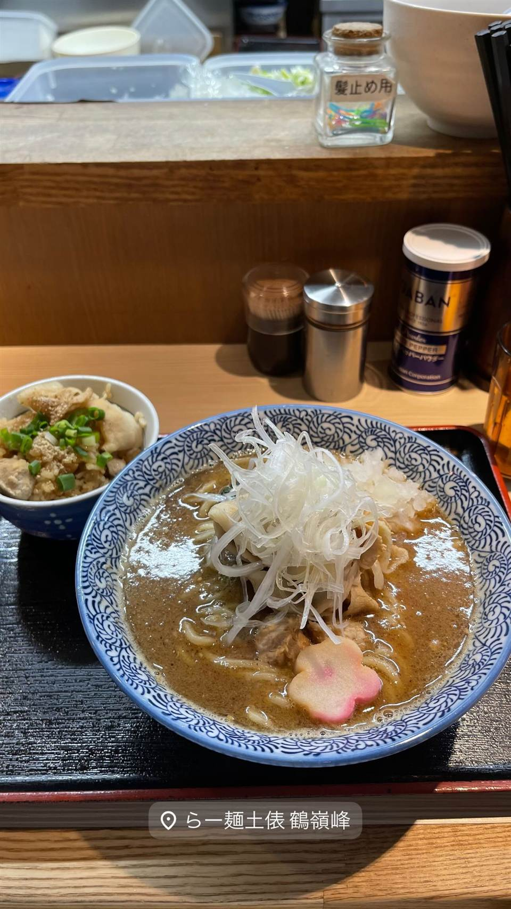

ラーメン · つけ麺 · 鶴見
★ また行きたいつけ麺で21位
らー麺土俵 鶴嶺峰
元力士の店主、番付にちなみ最大700gのつけ麺
らー麺土俵 鶴嶺峰
元大相撲力士・鶴嶺峰常光が引退後、千葉の「こうじ」グループで修行して2012年に開いたラーメン・つけ麺店。相撲の番付にちなんだ特大盛りメニューが名物で「爆盛りの名店」として知られる。

TRIVIA
豆知識
- 店主は元大相撲力士で、屋号「鶴嶺峰」は力士時代の四股名そのもの
- つけ麺の量は相撲の番付にちなみ序ノ口〜横綱まで選べ、最大700g
- 店の味を再現したカップ麺やお取り寄せ商品も発売されている
REVIEWS
世間の評判
93.8ラーメンDB
元力士店主が作る濃厚つけ麺
- 濃厚な魚介豚骨のつけ汁に限定で味噌や二郎系アレンジが加わり人気という声がある
- 平日夜でも50分待ちになるほどの人気行列店だという声が多く見られる
- 全粒粉入りの極太麺は少しボソッとした食感だという感想も見られる
ラーメンデータベース 口コミ443件・総合587位・最新 2026-09
| 創業 | 2012年11月28日開店 |
|---|---|
| 系譜 | 千葉の「こうじ」グループで修行して独立 |
| 看板 | 鶴嶺峰つけ麺（豚骨魚介の濃厚つけ麺） |
| こだわり | つけ麺の麺量を序ノ口（150g）〜横綱（700g）など相撲の番付名で選べる特盛りメニューが名物 |
| 掲載・評価 | 店の味がカップ麺（エースコック監修商品）やお取り寄せ（宅麺.com）にもなっている |
| どこから | 東京から1時間ほど |
| 行くなら | 行列 |
| 予算 | 昼 ¥1,000～¥1,999 夜 ¥1,000～¥1,999 |
| 場所 | 鶴見駅 神奈川県横浜市鶴見区 |
| メモ | 大行列ができる人気店。爆盛りメニューが目当ての客も多い |
食べたもの：つけ麺 / ラーメン
NEARBY
近い店・同じ系統の店
-
 ★
つけ麺 新小岩
麺屋 一燈
フレンチ出身の店主が42歳で始めた濃厚魚介豚骨つけ麺
昼 ¥1,000～¥1,999 夜 ¥1,000～¥1,999
★
つけ麺 新小岩
麺屋 一燈
フレンチ出身の店主が42歳で始めた濃厚魚介豚骨つけ麺
昼 ¥1,000～¥1,999 夜 ¥1,000～¥1,999
-
 ★
つけ麺 東十条
燦燦斗（さんさんと）
1日2時間半だけの営業、寺子屋仕込みのつけ麺
夜 ～¥999
★
つけ麺 東十条
燦燦斗（さんさんと）
1日2時間半だけの営業、寺子屋仕込みのつけ麺
夜 ～¥999
-
 ★
つけ麺 神田
三馬路 東京店（サンマロ）
博多祇園の名店をルーツに持つ、百名店選出の淡麗塩そば
夜 ¥1,000～¥1,999
★
つけ麺 神田
三馬路 東京店（サンマロ）
博多祇園の名店をルーツに持つ、百名店選出の淡麗塩そば
夜 ¥1,000～¥1,999
-
 ★
つけ麺 青葉台駅
らぁ麺 すぎ本
ラーメンの鬼、最後の弟子が作る自家製麺のつけ麺
昼 ¥1,000～¥1,999 夜 ¥1,000～¥1,999
★
つけ麺 青葉台駅
らぁ麺 すぎ本
ラーメンの鬼、最後の弟子が作る自家製麺のつけ麺
昼 ¥1,000～¥1,999 夜 ¥1,000～¥1,999
-
 ★
つけ麺 地下鉄成増
中華そば べんてん
べんてん-とし岡系という系譜を生んだ源流店とされる中華そば
昼 ¥1,000～¥1,999
★
つけ麺 地下鉄成増
中華そば べんてん
べんてん-とし岡系という系譜を生んだ源流店とされる中華そば
昼 ¥1,000～¥1,999
-
 ★
つけ麺 王子
キング製麺
ビブグルマン店の系列、白だしと山椒から選べる2種のスープ
昼 ¥1,000～¥1,999 夜 ¥1,000～¥1,999
★
つけ麺 王子
キング製麺
ビブグルマン店の系列、白だしと山椒から選べる2種のスープ
昼 ¥1,000～¥1,999 夜 ¥1,000～¥1,999